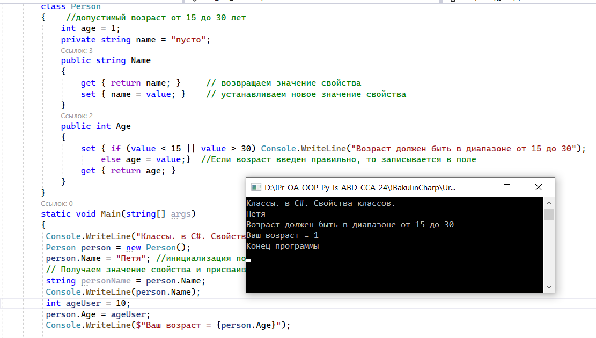
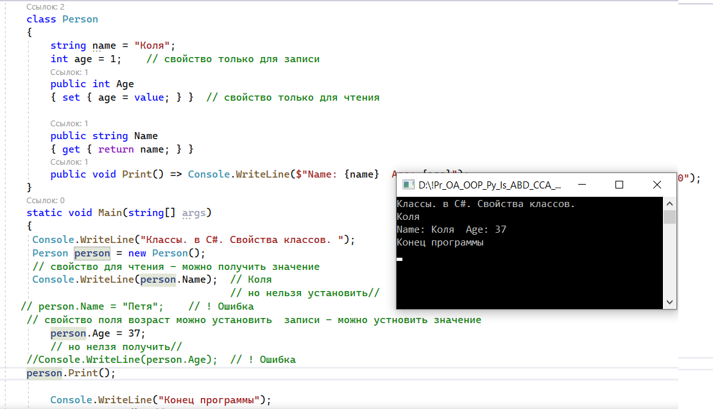

| Тема 3. Свойства классов. | ||
| Назад | ||
|
Кроме обычных методов в языке C# предусмотрены специальные методы доступа, которые называют свойства. Они обеспечивают простой доступ к полям классов и структур, узнать их значение или выполнить их установку. Определение свойствСтандартное описание свойства имеет следующий синтаксис: [модификаторы] тип_свойства название_свойства
{
get { действия, выполняемые при получении значения свойства}
set { действия, выполняемые при установке значения свойства}
}
Вначале определения свойства могут идти различные модификаторы, в частности, модификаторы доступа. Затем указывается тип свойства, после которого идет название свойства. Полное определение свойства содержит два блока: get и set. В блоке get выполняются действия по получению значения свойства. В этом блоке с помощью оператора return возвращаем некоторое значение. В блоке set устанавливается значение свойства. В этом блоке с помощью параметра value мы можем получить значение, которое передано свойству. Блоки get и set еще называются акссесорами или методами доступа (к значению свойства), а также геттером и сеттером. Рассмотрим пример: Person person = new Person(); // Устанавливаем свойство - срабатывает блок Set // значение "Tom" и есть передаваемое в свойство value person.Name = "Tom"; //инициализация поля свойство set метода Name // Получаем значение свойства и присваиваем его переменной - срабатывает блок Get string personName = person.Name; Console.WriteLine(person.Name); // Tom class Person { private string name = "Undefined"; public string Name { get { return name;// возвращаем значение свойства } set { name = value; // устанавливаем новое значение свойства } } }
Здесь в классе Person определено приватное поле
Через это свойство мы можем управлять доступом к переменной get { return name; }
А в блоке set устанавливаем значение переменной name. Параметр value представляет передаваемое значение, которое передается переменной name. set { name = value; }
В программе мы можем обращаться к этому свойству, как к обычному полю. Если мы ему присваиваем какое-нибудь значение, то срабатывает блок set, а передаваемое значение передается в параметр value: person.Name = "Tom"; //Это метод свойства поле с маленькой буквы, а метод с заглавной Если мы получаем значение свойства, то срабатывает блок get, который по сути возвращает значение переменной name: string personName = person.Name; То есть по сути свойство Name ничего не хранит, оно выступает в роли посредника между внешним кодом и переменной name. Возможно, может возникнуть вопрос, зачем нужны свойства, если мы можем в данной ситуации обходиться обычными полями класса? Но свойства позволяют вложить дополнительную логику, которая может быть необходима при установке или получении значения. Например, нам надо установить проверку по возрасту: Person person = new Person();
Console.WriteLine(person.Age); // 1
// изменяем значение свойства
person.Age = 37;
Console.WriteLine(person.Age); // 37
// пробуем передать недопустимое значение
person.Age = -23;
// Возраст должен быть в диапазоне от 1 до 120
Console.WriteLine(person.Age); // 37 - возраст не изменился
class Person
{
int age = 1;
public int Age
{ set {
if (value < 1 || value > 120)
Console.WriteLine("Возраст должен быть в диапазоне от 1 до 120");
else
age = value; }
get { return age; }
}
}
В данном случае переменная age хранит возраст пользователя. Напрямую мы не можем обратиться к этой переменной - только через свойство Age. Причем в блоке set мы устанавливаем значение, если оно соответствует некоторому разумному диапазону. Поэтому при передаче свойству Age значения, которое не входит в этот диапазон, значение переменной не будет изменяться: person.Age = -23;
 Таким образом, свойство позволяет опосредовать и контролировать доступ к данным объекта. Свойства только для чтения и записиБлоки set и get не обязательно одновременно должны присутствовать в свойстве. Если свойство определяет только блок get, то такое свойство доступно только для чтения - мы можем получить его значение, но не установить. И, наоборот, если свойство имеет только блок set, тогда это свойство доступно только для записи - можно только установить значение, но нельзя получить: Person person = new Person();
// свойство для чтения - можно получить значение
Console.WriteLine(person.Name); // Tom
// но нельзя установить//
person.Name = "Bob"; // ! Ошибка
// свойство для записи - можно устновить значение
person.Age = 37;
// но нелзя получить//
Console.WriteLine(person.Age); // ! Ошибка
person.Print();
class Person
{
string name = "Tom";
int age = 1; // свойство только для записи
public int Age
{ set { age = value; }} // свойство только для чтения
public string Name
{ get { return name; }}
public void Print()=> Console.WriteLine($"Name: {name} Age: {age}");
}
 Здесь свойство Name доступно только для чтения, поскольку оно имеет только блок get: public string Name{ get { return name; }}
Мы можем получить его значение, но НЕ можем установить: Console.WriteLine(person.Name); // получить можно person.Name = "Bob"; // ! Ошибка - установить нельзя А свойство Age, наоборот, доступно только для записи, поскольку оно имеет только блок set: public int Age{ set { age = value; }}
Можно установить его значение, но нельзя получить: person.Age = 37; // установить можно Console.WriteLine(person.Age); // ! Ошибка - получить значение нельзя Вычисляемые свойстваСвойства необязательно связаны с определенной переменной. Они могут вычисляться на основе различных выражений Person tom = new("Tom", "Smith");
Console.WriteLine(tom.Name); // Tom Smith
class Person
{
string firstName;
string lastName;
public string Name
{
get { return $"{firstName} {lastName}"; }
}
public Person(string firstName, string lastName)
{
this.firstName = firstName;
this.lastName = lastName;
}
}
В данном случае класс Person имеет свойство Name, которое доступно только для чтения и которое возвращает общее значение на основе значений переменных firstName и lastName. Модификаторы доступаМы можем применять модификаторы доступа не только ко всему свойству, но и к отдельным блокам get и set: Person tom = new Person("Tom"); /
tom.Name = "Bob";// Ошибка - set объявлен с модификатором private/
Console.WriteLine(tom.Name); // Tom
class Person
{
string name = "";
public string Name
{ get { return name; }
private set { name = value; }
}
public Person(string name) => Name = name;
}
Теперь закрытый блок set мы сможем использовать только в данном классе - в его методах, свойствах, конструкторе, но никак не в другом классе: При использовании модификаторов в свойствах следует учитывать ряд ограничений:
Автоматические свойстваСвойства управляют доступом к полям класса. Однако что, если у нас с десяток и более полей, то определять каждое поле и писать для него однотипное свойство было бы утомительно. Поэтому в .NET были добавлены автоматические свойства. Они имеют сокращенное объявление: class Person
{
public string Name { get; set; }
public int Age { get; set; }
public Person(string name, int age)
{ Name = name;
Age = age; }
}
На самом деле тут также создаются поля для свойств, только их создает не программист в коде, а компилятор автоматически генерирует при компиляции. В чем преимущество автосвойств, если по сути они просто обращаются к автоматически создаваемой переменной, почему бы напрямую не обратиться к переменной без автосвойств? Дело в том, что в любой момент времени при необходимости мы можем развернуть автосвойство в обычное свойство, добавить в него какую-то определенную логику. Стоит учитывать, что нельзя создать автоматическое свойство только для записи, как в случае со стандартными свойствами. Автосвойствам можно присвоить значения по умолчанию (инициализация автосвойств): Person tom = new();
Console.WriteLine(tom.Name); // Tom
Console.WriteLine(tom.Age); // 37
class Person
{
public string Name { get; set; } = "Tom";
public int Age { get; set; } = 37;
}
И если мы не укажем для объекта Person значения свойств Name и Age, то будут действовать значения по умолчанию. Автосвойства также могут иметь модификаторы доступа: class Person
{
public string Name { private set; get;}
public Person(string name) => Name = name;
}
Мы можем убрать блок set и сделать автосвойство доступным только для чтения. В этом случае для хранения значения этого свойства для него неявно будет создаваться поле с модификатором readonly, поэтому следует учитывать, что подобные get-свойства можно установить либо из конструктора класса, как в примере выше, либо при инициализации свойства: class Person
{
// через инициализацию свойства
public string Name { get; } = "Tom"; // через конструктор
public Person(string name) => Name = name;
}
Блок initНачиная с версии C# 9.0 сеттеры в свойствах могут определяться с помощью оператора init (от слова "инициализация" - это есть блок init призван инициализировать свойство). Для установки значений свойств с init можно использовать только инициализатор, либо конструктор, либо при объявлении указать для него значение. После инициализации значений подобных свойств их значения изменить нельзя - они доступны только для чтения. В этом плане init-свойства сближаются со свойствами для чтения. Разница состоит в том, что init-свойства мы также можем установить в инициализаторе (свойства для чтения установить в инициализаторе нельзя). Например: Person person = new();
//person.Name = "Bob"; //! Ошибка - после инициализации изменить значение нельзя
Console.WriteLine(person.Name); // Undefined
public class Person
{
public string Name { get; init; } = "Undefined";
}
В данном случае класс Person для свойства Name вместо сеттера использует оператор init. В итоге на строке Person person = new(); предполагается создание объекта с инициализацией всех его свойств. В данном случае свойство Name получит в качестве значения строку "Undefined". Однако поскольку инициализация свойства уже произошла, то на строке person.Name = "Bob"; // Ошибка мы получим ошибку. Как можно установить подобное свойство? Выше продемонстрирован один из способов - установка значения при определении свойства. Второй способ - через конструктор: Person person = new("Tom");
Console.WriteLine(person.Name); // Tom
public class Person
{
public Person(string name) => Name = name;
public string Name { get; init; }
}
Третий способ - через инициализатор: Person person = new("Tom");
Console.WriteLine(person.Name); // Tom
public class Person
{
public Person(string name) => Name = name;
public string Name { get; init; }
}
В принцпе есть еще четвертый способ - установка через другое свойство с модификатором init: var person = new Person() { Name = "Sam" };
Console.WriteLine(person.Name); // Sam
Console.WriteLine(person.Email); // Sam@gmail.com
public class Person
{
string name = "";
public string Name
{
get { return name; }
init
{
name = value;
Email = $"{value}@gmail.com";
}
}
public string Email { get; init; } = "";
}
В данном случае свойство Name управляет полем для чтения Причем если при объявлении свойства указано значение, то в конструкторе мы можем его изменить. Значение, установленное в конструкторе, можно изменить в инициализаторе. Однако дальше процесс инициализации заканчивается. И значение не может быть изменено. Сокращенная запись свойствКак и методы, мы можем сокращать определения свойств. Поскольку блоки get и set представляют специальные методы, то как и обычные методы, если они содержат одну инструкцию, то мы их можем сократить с помощью оператора =>: class Person
{
string name;
public string Name
{ get => name; set => name = value; }
}
Также можно сокращать все свойство в целом: class Person
{
string name; // эквивалентно
public string Name { get { return name; } }
public string Name => name;
}
модификатор requiredМодификатор required (добавлен в C# 11) указывает, что поле или свойства с этим модификатором обязательно должны быть инициализированы. Например, в следующем примере мы получим ошибку: Person tom = new Person(); // ошибка - свойства Name и Age не инициализированы
public class Person
{
public required string Name { get; set;}
public required int Age { get; set; }
}
Здесь свойства Name и Age отмечены как обязательные для инициализации с помощью модификатора required, поэтому необходимо использовать инициализатор для их инициализации: Person tom = new Person { Name = "Tom", Age = 38 }; // ошибки нет
Причем не важно, устанавливаем эти свойства в конструкторе или инициализируем при определении, все равно надо использовать инициализатор для установки их значений. Например, в следующем примере мы получим ошибку: Person bob = new Person("Bob"); // ошибка - свойства Name и Age все равно надо установить в инициализаторе
public class Person
{
public Person(string name) { Name = name; }
public required string Name { get; set; }
public required int Age { get; set; } = 22;
}
В простых случаях, когда свойства get и set методы доступа не выполняют никаких других операций, кроме установки или извлечения значения в закрытом поле резервного копирования, можно воспользоваться поддержкой компилятора C# для автоматически реализованных свойств. В следующем примере реализуется Hours как автоматически реализованное свойство. class TimePeriod3 { public double Hours { get; set; } } Метод доступа get часто состоит из одного оператора, который возвращает значение, как в предыдущем примере. Метод доступа get можно реализовывать как элемент, воплощающий выражение. В приведенном ниже примере методы доступа get и set реализуются как члены, воплощающие выражение. class TimePeriod2 { private double _seconds; public double Seconds { get => _seconds; set => _seconds = value; } } В приведенном ниже примере определен как метод доступа get, так и метод доступа set для свойства с именем Seconds. Для возвращения значения свойства в нем используется закрытое поле с именем _seconds. class TimePeriod { private double _seconds; public double Seconds { get { return _seconds; } set { if (value < 0) { throw new ArgumentOutOfRangeException(nameof(value), "Значение периода времени должно быть неотрицательным."); } _seconds = value; } } } p |
||
|
|
||
| Конспект подготовлен Бакулиным А. М. 2022 год. | ||